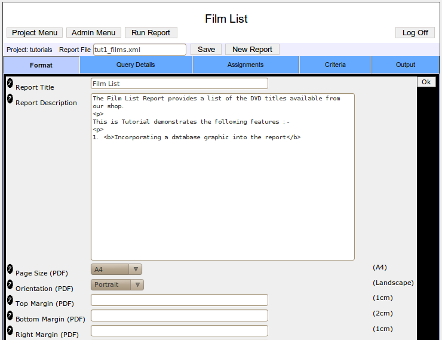

Report Design ModeEntering Design ModeYou
may only enter design mode when logged in as Administrator.
enabled. Design mode is entered either by selecting the Design Report option from the report criteria entry screen.
Design Mode OverviewUse
design mode to create, edit and save your reports. The design mode is
organised as a tabbed menu system . 
Report
ManipulationPart of Reportico's power is the ways that database
data can be prepared and manipulated prior and during the main report
query. Reportico provides 3 main ways to achieve this
:- Pre-SQLs These
are SQL statements that are executed prior to the main report query and
are used to prepare temporary tables or run other SQL statements that could
set a database configuration parameter or perform UPDATEs and DELETEs.
Criteria values selected by the user on the Prepare screen can be
incorporated into these statements. See Query Details => Pre-SQLs for more details. Custom
Code This is your own PHP code that is executed after any
Pre-SQLs and before the main report query. This is used as an alternative
to Pre-SQLs or for more complex preparatory work than can be performed in
Pre-SQLs. You have access to the database through the $_connection ADODB
class variable where you can create SQL statements and execute them, use
database cursors and transactions. And you have access to the user
criteria through the $_criteria variable so that you can pull out relevant data before the main report query uses it. Also, this preparatory phase is a
useful feature that can simplify and speed up reports that would otherwise
be slowed down by a large main query consisting of many tables and many
joins. It may be more sensible to place in here ( or in the Pre-SQLs if
appropriate ) statements that prepare a temporary table of data from a
large table that matches the user criteria which can then be linked in
with the rest of the report tables in the main query. See Custom Source Code for more details. Also a
great deal of data reformatting can be done here in database cursors that
can prepare a temporary table with column values that have been
reformatted. Assignments These
are snippets of PHP code that are run while the main report query is
running and are used to calculate values for custom report columns based
on the retrieved report data, or they can be used to transform the report
data before being finally presented in the finished report. For example, a datetime value coming from the database can be
converted to just the time elemented by entering an assignment that uses
the PHP substr function to chop off the date part. Also, an assignment can
concatenate or otherwise reformat many columns into a single
one. Also, assignments can be made to custom user columns that
may be calculations based on the report data such a sums, averages etc. Conditions may be applied to an assignment so that the
assignment is only performed if a certain condition is met. For example,
if a numeric column is negative it could be reformatted to show the number
in brackets or in red by surrounding it in html tags that alter the colour
(although that wouldn't work in PDF
output). See The Assignments Menu for more details.
Top Level MenuTop Level Menu Options
| Project Menu |
Returns to the project menu selection screen |
| Admin Menu |
Returns you to the Administration Page |
| Run Report |
Returns to the Report Criteria Entry Page |
| Report File | Identifies the name of the report definition currently
working on. |
| Save button | Saves the
current report to disk. The file will be saved in the projects area with the
named displayed in the Report File box. To save with a different name
change this text and press the Save button. From then on any modifications
you will relate to that new file
name. |
| New Report |
Creates an empty report so you can start from scratch |
Tab MenusEach tabbed
menu is described in detail in the following chapters. The top level
tabbed menu comprises the following options
:- | Format | Provides
set up of general presentation parameters for the report such as report
title, description, paging options and custom
code. | | Query Details | Entry of main
report query that fetches the data for displaying on report. Set up of
column labels, justification, visibility
etc | | Assignments | Set up of
expressions such as calculations and string manipulation to be performed
on the report data. Also used for reporting graphical data from
database | | Criteria | Set up of the
criteria items and expand/lookup options that the user will use to select
from on the Prepare
screen. | | Output | Set up of grouping,
graphs, page formatting for PDF
etc |
| Prev |
Up |
Next |
| Report Preparation and Execution |
Reportico User Manual |
The Design Format Menu |
|
|